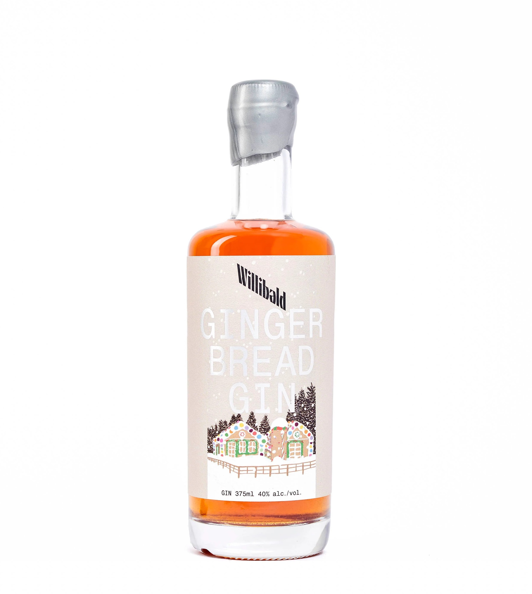
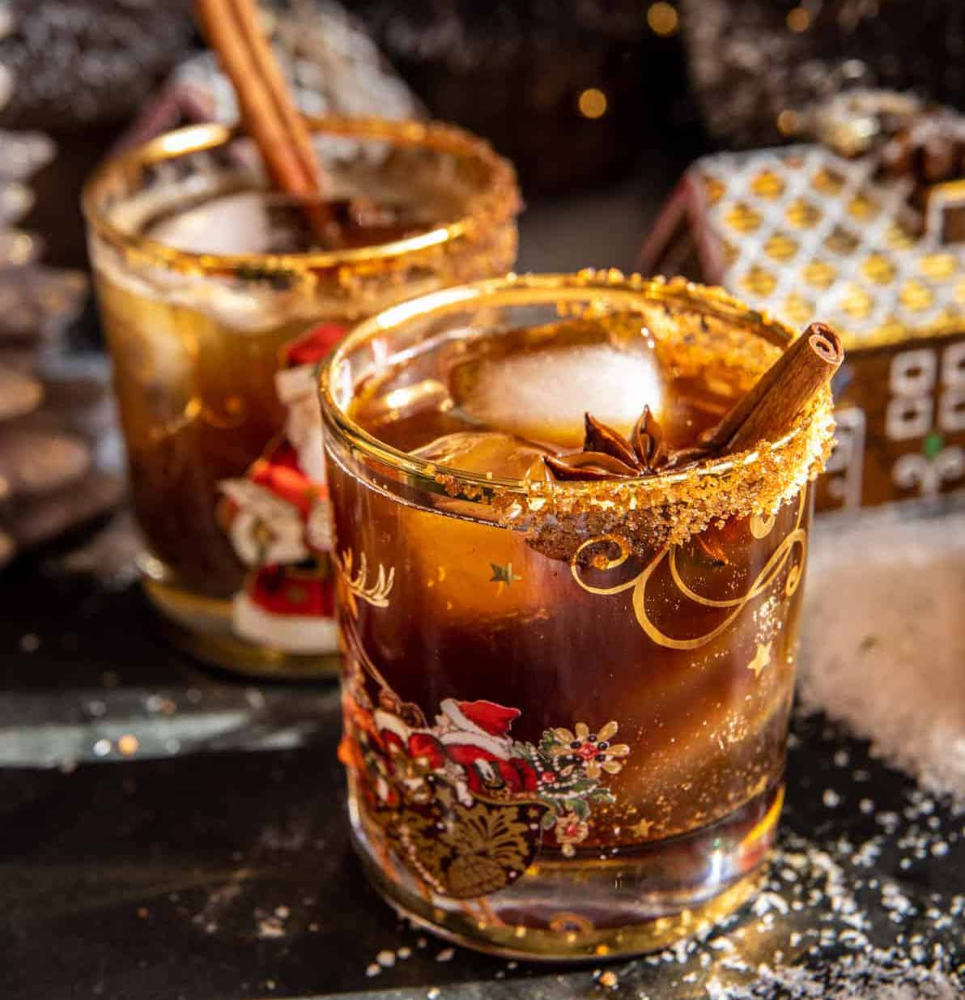

Gin-gerbread Smash
This past holiday season I stumbled upon a bottle of Willibald Gingerbread Infused Gin at the LCBO and knew I would be able to transform it into the perfect holiday cocktail that is still versatile enough to make year-round. My recipe combines the spiciness of the gingerbread gin with the warmth of Southern Comfort. I like this drink most when topped off with ginger ale, however if you’d like an even more gingery flavour, it tastes amazing topped off with a spicier ginger beer.
I first made a couple different versions of this drink for myself to get the proportions just right and then I made one for my boyfriend and altered the proportions slightly after some feedback. I then made a batch of this recipie for a friendly cocktail competition I attended with some friends where, not to brag, it was voted by everyone as the unanimous overall winner. I also made a large jug before my family Christmas Day dinner and everyone loved it, which made me feel quite impressive because my family is full of picky-eaters. So if you’d like to wow your family and friends with a fantastic cocktail, check out the recipe below!
Ingredients for one portion:
- 1.5 ounces Willibald gingerbread gin
- 0.5 ounces Southern Comfort
- 0.25 ounces lemon juice
- Ginger ale
- Ice
Optional garnishes:
- Cinnamon stick
- Star anise
- Lemon slice
Instructions:
- Combine the gin, Southern Comfort, and lemon juice in a shaker with ice and shake until chilled.
- Strain into a cup of fresh ice and top with ginger ale and your choice of garnishes.
Notes:
- If adding a cinnamon stick I highly recommend using it to stir the cocktail before serving or even throwing it in your shaker.
- The amount of ginger ale added will depend on the size of your cup but I recommend adding 4-6oz for the perfect proportions.
Cheers!
Feel free to leave a comment!